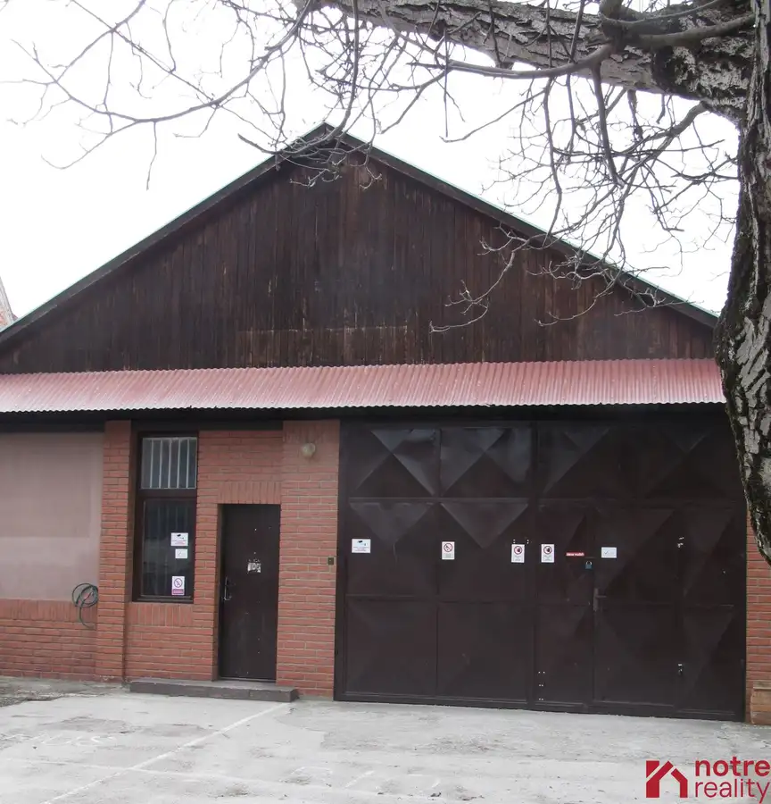
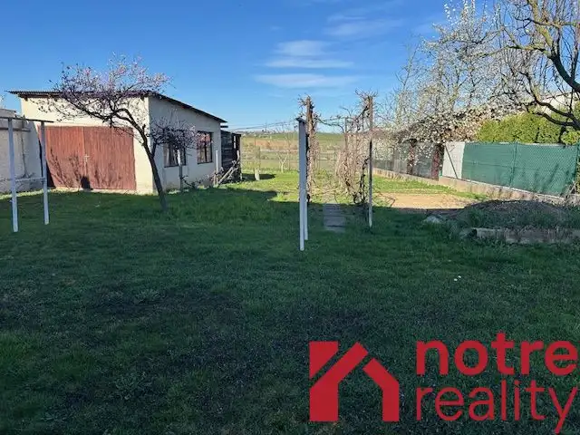
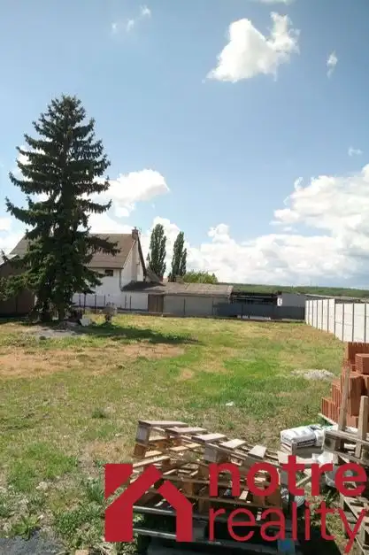
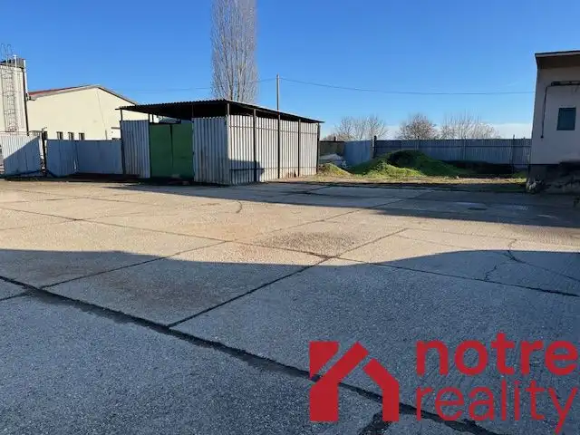
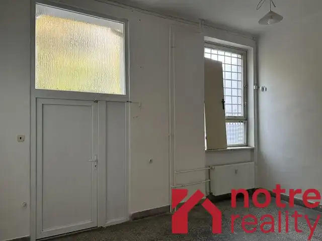
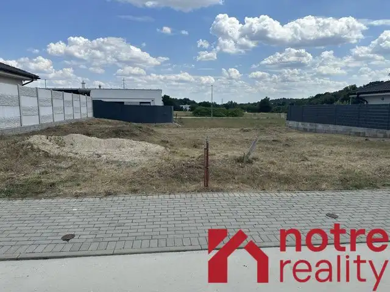
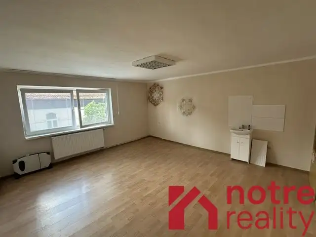

Aktuálna ponuka
Nehnuteľnosti, ktoré ponúkam
10 nehnuteľností na predaj a prenájom. Vyberte typ, alebo napíšte lokalitu.
10 z 10 ponúk
 Nebytové priestory7
Cena dohodouNebytové priestory s pozemkom v centre mesta Lučenec
Lučenec
100 m²
Nebytové priestory s pozemkom sú v úplnom centre mesta Lučenec. Na pozemku o výmere 400 m2 je postavená budova, ktorej montovaný skelet je zo…
Nebytové priestory7
Cena dohodouNebytové priestory s pozemkom v centre mesta Lučenec
Lučenec
100 m²
Nebytové priestory s pozemkom sú v úplnom centre mesta Lučenec. Na pozemku o výmere 400 m2 je postavená budova, ktorej montovaný skelet je zo…
 Nebytové priestory10
310 000 €Podnikateľský objekt v centre mesta Lučenec
Lučenec
1162 m²
PODNIKATEĽSKÝ OBJEKT je situovaný v lukratívnej časti v meste Lučenec. Celková výmera pozemku 1162 m2. Na pozemku sa nachádzajú kancelárske priestory…
Nebytové priestory10
310 000 €Podnikateľský objekt v centre mesta Lučenec
Lučenec
1162 m²
PODNIKATEĽSKÝ OBJEKT je situovaný v lukratívnej časti v meste Lučenec. Celková výmera pozemku 1162 m2. Na pozemku sa nachádzajú kancelárske priestory…
 Byt9
95 000 €Slnečný 3 izbový byt na Rúbanisko III v Lučenci
Lučenec
3-izbový71 m²
Slnečný trojizbový byt na Rúbanisku III v Lučenci je po čiastočnej rekonštrukcii, v byte sú plastové okná so žalúziami. Byt sa nachádza v zateplenom…
Byt9
95 000 €Slnečný 3 izbový byt na Rúbanisko III v Lučenci
Lučenec
3-izbový71 m²
Slnečný trojizbový byt na Rúbanisku III v Lučenci je po čiastočnej rekonštrukcii, v byte sú plastové okná so žalúziami. Byt sa nachádza v zateplenom…

Nebytové priestory5 Cena dohodouSkladové priestory na prenájom v centre mesta Lučenec Lučenec 200 m² Ponúkame na prenájom skladové priestory v centre mesta Lučenec s rozlohou 200 m2. Súčasťou skladových priestorov je WC + umývadlo + sprchový kút. V…
Rodinné domy10 Cena dohodouPriestranný rodinný dom v tichej lokalite mesta Lučenec Lučenec 6-izbový160 m² Poschodový rodinný dom s plochou strechou, ktorý je z 2/3 podpivničený ponúka skvelý potenciál pre komfortné bývanie. Nachádza sa v tichej lokalite…
Pozemok3 Cena dohodouStavebný pozemok v tichej lokalite mesta Lučenec Lučenec 596 m² Stavebný pozemok v tichel okrajovej časti mesta Lučenec. Rovinatý, slnečný pozemok ponúka ideálne podmienky na výstavbu rodinného domu. Lokalita…
Nebytové priestory4 1 200 €Prenájom nebytových priestorov v Lučenci Lučenec 2400 m² Ponúkané nebytové priestory na prenájom v meste Lučenec vcelku tvoria : štyri veľké garáže, prístupová cesta, dvor, samostatná budova vhodná pre…
Nebytové priestory7 1 900 €Na prenájom reprezentatívne nebytové priestory v centre mesta Lučenec Lučenec 140 m² Ponúkame na prenájom atraktívne nebytové priestory s celkovou výmerou 140 m2, situované v centre mesta. Priestory sú ideálne pre prevádzku…
Pozemok4 62 000 €Stavebný pozemok v atraktívnej lokalite novostavieb Lučenec 490 m² Ponúkame na predaj rovinatý stavebný pozemok situovaný v pokojnej a vyhľadávanej lokalite s novými rodinnými domami. Medzi hlavné výhody patria :…
Nebytové priestory3 Cena dohodouPriestor v centre mesta Lučenec na prenájom Lučenec 1-izbový25 m² Ponúkame na prenájom nebytový priestor na 1. poschodí administratívnej budovy, vhodný na kanceláriu, alebo poskytovanie služieb. Priestor pozostáva z…Tomuto výberu zatiaľ nezodpovedá žiadna ponuka. Napíšte mi, čo hľadáte.